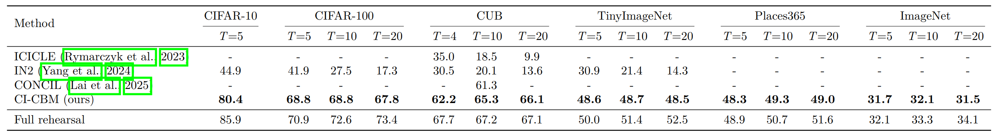
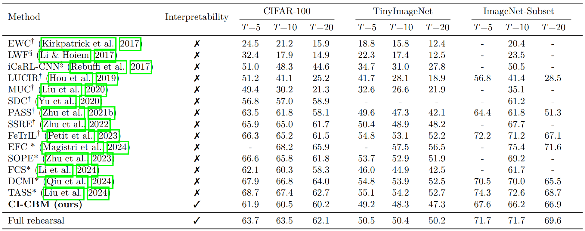
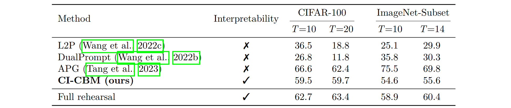
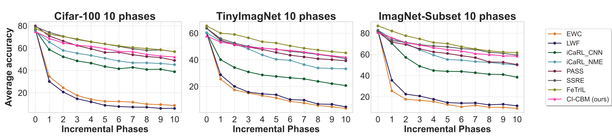
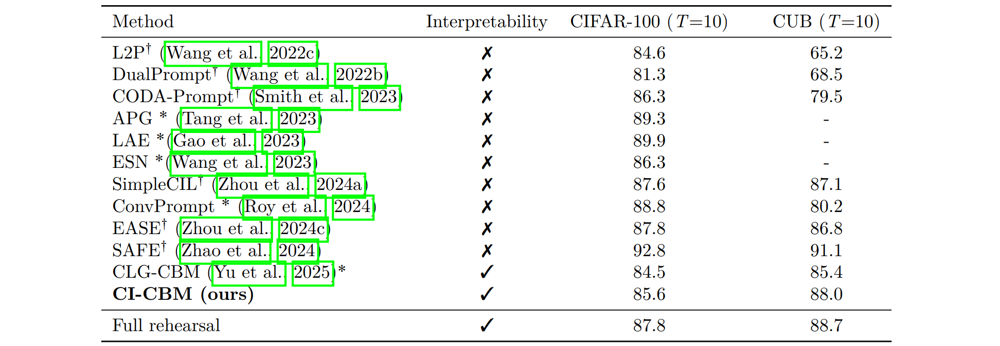
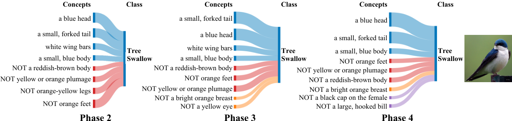
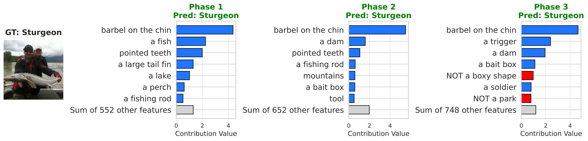

Experiments
1. Comparison to interpretable methods
- CI-CBM substantially improves average incremental accuracy over prior interpretable continual learning methods (ICICLE, IN2, CONCIL) across CIFAR-10/100, CUB, TinyImageNet, Places365, and ImageNet, while staying close to an impractical full-rehearsal upper bound that stores all past data.

Table 1. Comparison to other interpretable class-incremental methods.
2. Comparison to non-pretrained and non-interpretable methods
- With a ResNet backbone trained from scratch in the first phase, CI-CBM remains competitive with strong unrestricted baselines; we report tabular comparisons and average-accuracy curves over incremental phases on CIFAR-100, TinyImageNet, and ImageNet-Subset.

Table 2. Comparison to exemplar-free methods without an interpretability constraint (ResNet, non-pretrained setting).

Table 3. Comparison to prompt-based EFCIL methods with a DeiT backbone trained from first-phase data (non-pretrained setting).

Figure 2. Average accuracy over incremental phases vs. unrestricted ResNet-based methods.
3. Comparison to pretrained ViT-based methods
- Using a ViT-Base/16 backbone pretrained on ImageNet-21k, CI-CBM achieves competitive accuracy relative to state-of-the-art prompt-based continual learning methods while retaining a concept bottleneck.

Table 4. Pretrained ViT-based exemplar-free continual learning (average incremental accuracy).
4. Interpretability and insights on model reasoning
CI-CBM is interpretable at two levels. Global interpretability comes from the sparse final layer: each class is described as a weighted combination of human-readable concepts from the bottleneck. You can read off which concepts vote for or against a class, how strong those ties are, and how that structure evolves as new classes and new concepts are added over incremental phases. Concepts with negative weights act as “not this concept” evidence, and the thickness of links reflects the magnitude of each weight, so the model’s high-level decision rules stay inspectable rather than hidden in a black box.

Figure 3. Global view of concept-to-class weights for Tree Swallow on CUB: which interpretable concepts support or oppose the class, and how that structure appears under a multi-phase class-incremental setup.
Local interpretability explains individual predictions. For a given image, the model forms a concept activation vector; multiplying those activations by the class-specific weights shows how much each concept pushed the classifier toward or away from each label. That yields a per-input attribution: which concepts were most responsible for the predicted class on this example, and how those contributions change when more classes enter the stream and the classifier is updated. Together, global and local views answer both “what rules does the model use for this class?” and “why did it classify this particular image this way?”

Figure 4. Local view of concept-level contributions for one image across incremental phases on ImageNet-Subset: how salient concepts for the prediction shift as more classes are learned.
Cite this work
A. Javadi, T. Oikarinen, T. Javidi, and T.-W. Weng,
CI-CBM: Class-Incremental Concept Bottleneck Model for Interpretable Continual Learning, TMLR 2026.
@article{javadi2026ci,
title={CI-CBM: Class-Incremental Concept Bottleneck Model for Interpretable Continual Learning},
author={Javadi, Amirhosein and Oikarinen, Tuomas and Javidi, Tara and Weng, Tsui-Wei},
journal={Transactions on Machine Learning Research},
year={2026},
}